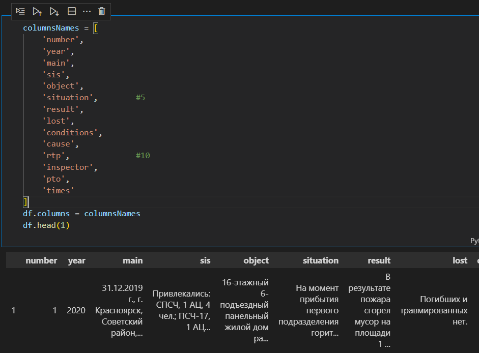
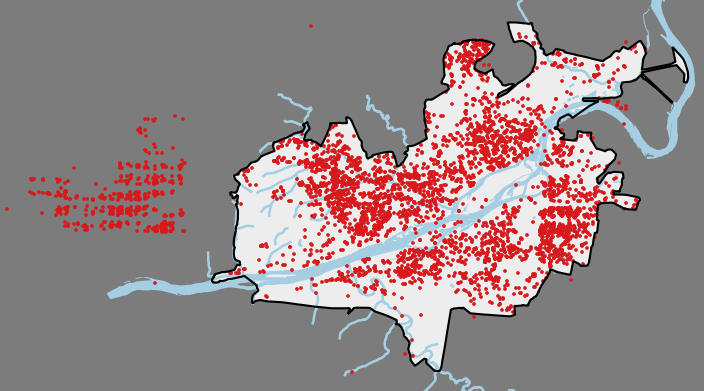
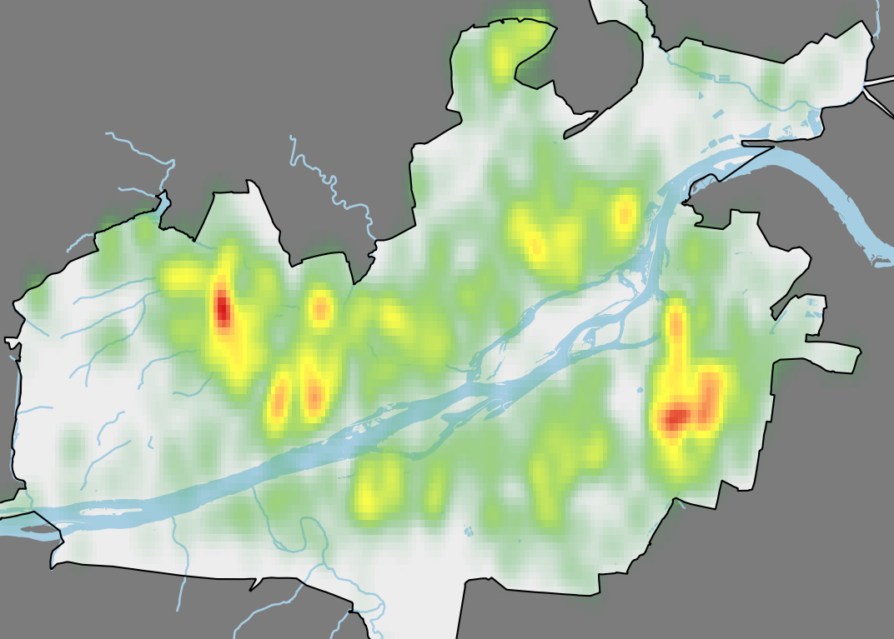
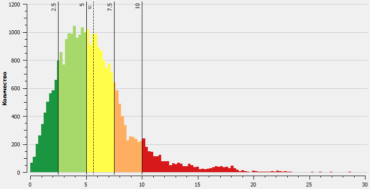
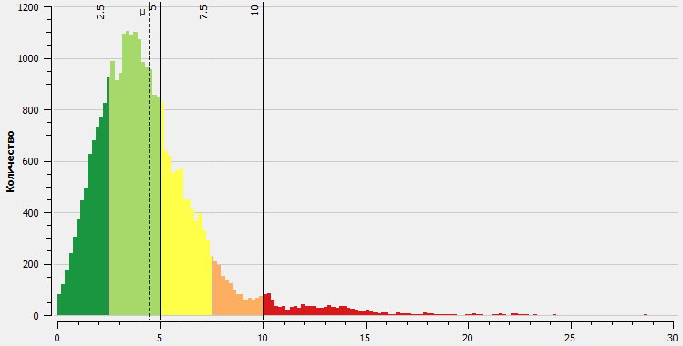

Ежедневный отчет
Вторник. Расчеты для Красноярска
gantt
title Ход работы
dateFormat HH:mm
axisFormat %H:%M
section 1. Общая работа
Подведение итогов, планирование :a1, 17:00, 30m
section 1. Расчет Красноярск
Окончательная сборка Датасета :b1, 08:30, 1h
Оформление карты Красноярска :b2, after b1, 12:20
Оформление расчетного ноутбука :b3, 13:30, 14:00
Проведение расчетов :b4, 14:00, 15:30
Отладка кода ноутбуков :b5, 14:30, 15:15
Визуализация результатов расчетов :b6, after b4, 17:00
Блок 1. Общая работа
План на завтра
- Оформить таблицу для заполнения на участников тренировки по учениям в Емельяново и направить для заполнения.
- Начать писать отчет по расчету для Красноярска
- Начать отчет по работе отдела за 2022 год
- Изучить методические рекомендации по учениям Арктика 2023
2. Расчет Красноярск
Оформление рабочего датасета
Получен итоговый датасет по пожарам в Красноярске за 2020-2022 годы. Пришлось изрядно потрудиться вытаскивая данные из текстового вида. Ход работы такой:
- Сохранить данные из файлов
Word в текстовый файл - без обработки, просто полностью вынести для последующей работы средствами Python
- Сформировать DataFrame из сырых данных - просто разобрать данные из текстового файла по записям и сохранить в виде
csv. Записями DataFrame являются записи о пожарах, столбцами - отдельные блоки информации, согласно разделению в исходном файле: 
- Произвести парсинг данных - выбрать из записей значимые для анализа данные. В данном случае, были выбраны следующие данные:
- дата пожара
- район
- адрес
- координаты
- район выезда
- объект
- площадь пожара
- временные показатели
- ранг пожара
- погибло
- пострадало
- привлекалось человек
- АЦ
- АЛ
- Изменить типы данных в соответствии с хранящейся информацией. Это требуется для удобства работы и уменьшения размера итогового файла
- Обогатить данные. В данном случае нам дополнительно потребовались следующие сведения:
скорость следования пожарных подразделений, время следования подразделений
- Для более чем 100 записей не были указаны географические координаты, поэтому для них была произведена процедура геокодирования
- В заключение был подготовлен файл
gpkg
- Произведена окончательная очистка данных - были отброшены данные выходившие за пределы города Красноярска 
Итоговый датасет составил 4112 записей о выездах на пожары и загорания. Это 66% от исходного набора. Прочие записи были утрачены в связи с невозможностью их интерпретации в связи с отсутствующими или испорченными данными в рассматриваемых фичах.

Предварительные расчеты
Предварительные расчеты были произведены с использованием библиотеки FUDO полученной в ходе прошлогодней работы.
Для расчета использовался граф дорожной сети (ГДС) Красноярска.
Расчет проводился на основе известных данных о дислокации пожарных подразделений. Цель расчета – определить наилучшие места размещения 5 новых пожарных подразделений.
Расчет производился для средней скорости следования 35 км/ч.
Требуется уточнить реальные средние скорости следования пожарных автомобилей в г. Красноярске.
Сравнение показателей до и после расчета


Предварительный итог расчета